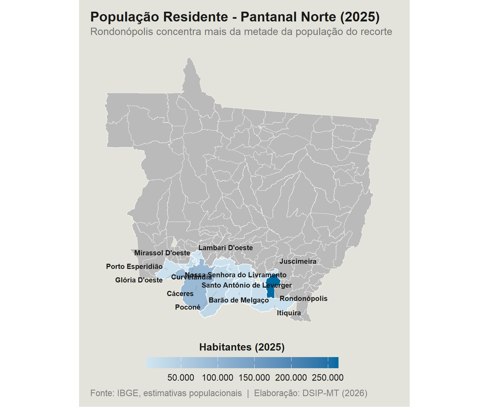
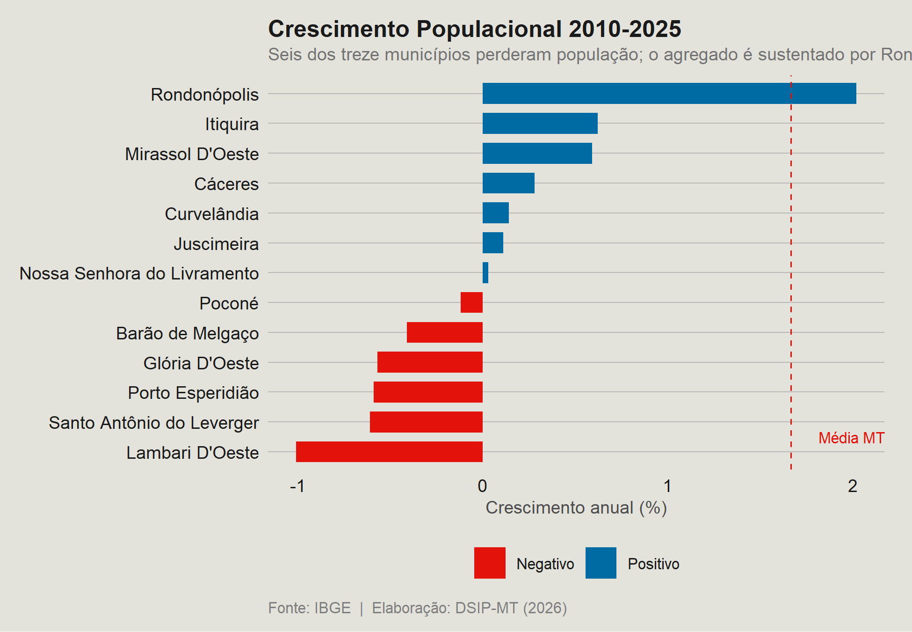
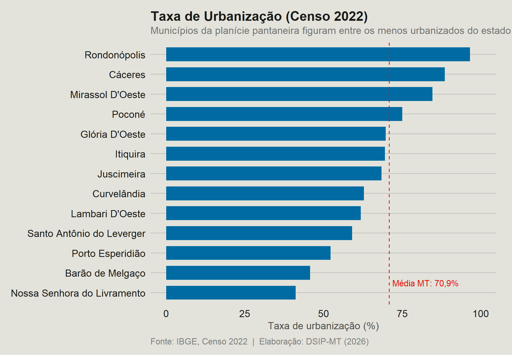
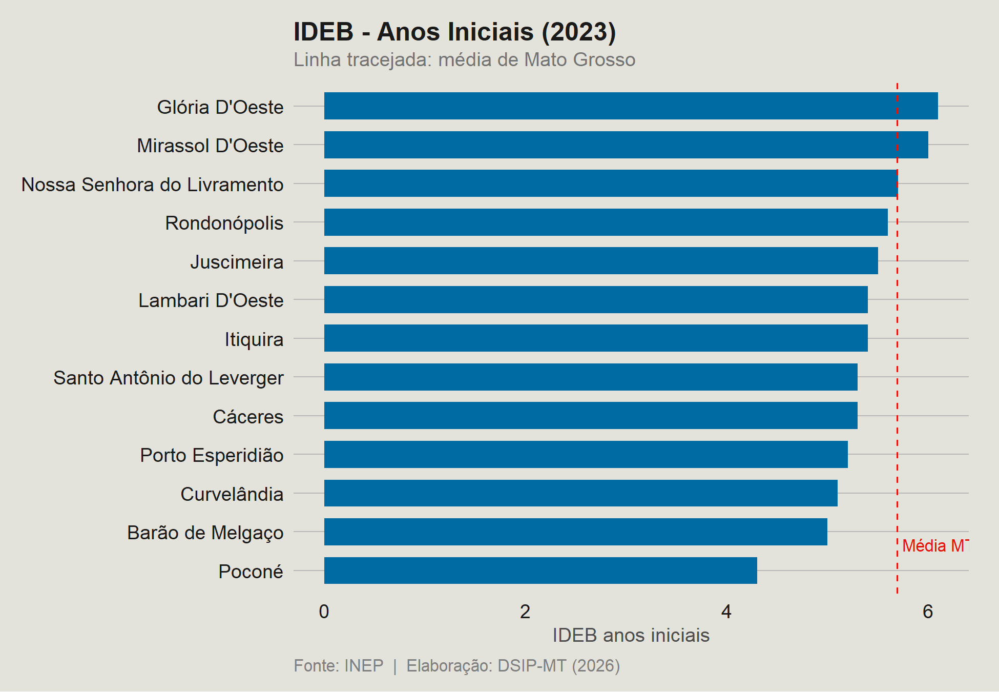
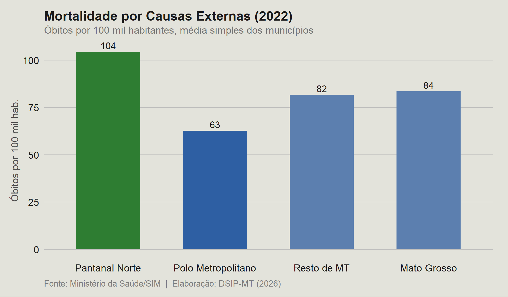
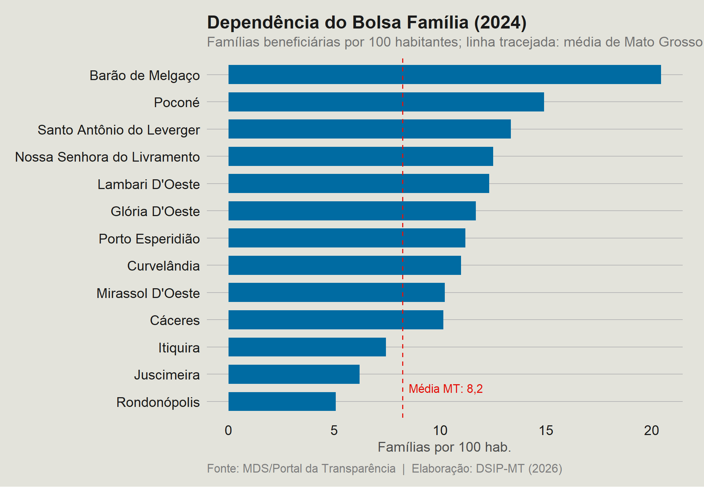
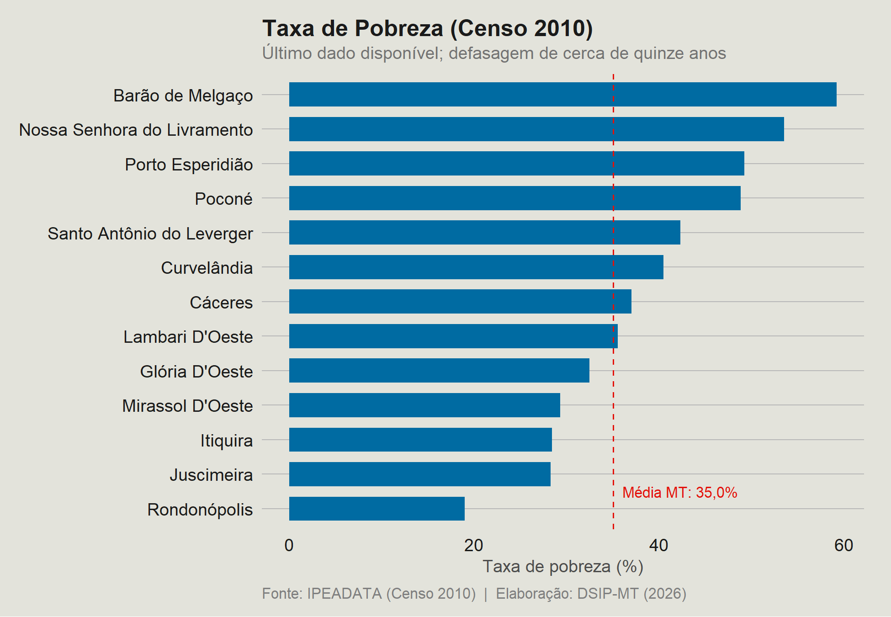
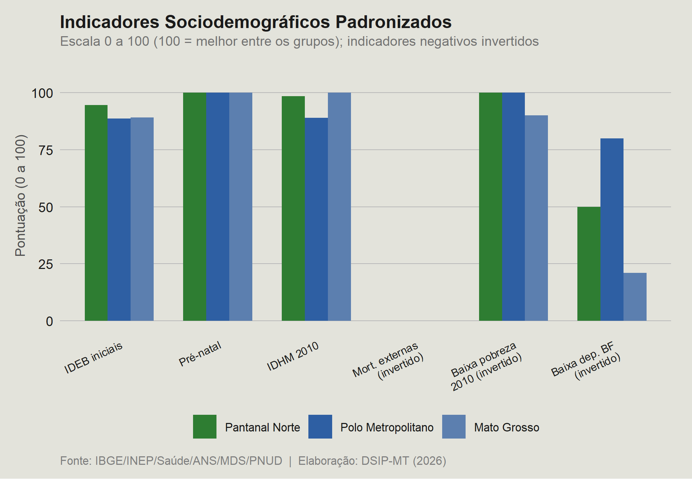

D3 · Perfil sociodemográfico (PSDM)
Relatório Parcial I — versão congelada de 08/07/2026. Os números vêm das bases tratadas da Fase I.
Principais resultados
Em 2025, o recorte somava 496.756 habitantes (12,8% da população estadual), com crescimento de 1,0% ao ano entre 2010 e 2025, abaixo da média estadual (1,7% ao ano) e com 6 dos 13 municípios em declínio populacional. O Pantanal Norte é a região de maior dependência relativa de transferências de renda do estado: em 2024, a taxa do Programa Bolsa Família era, em média, de 11,27 famílias por 100 habitantes, ante 8,22 em Mato Grosso, e a transferência per capita média (R$ 1.361) situou-se 24% acima da estadual. Na educação, o IDEB de 2023 (5,38 nos anos iniciais e 4,45 nos anos finais) é inferior à média estadual (5,69 e 4,74). Em saúde, a mortalidade por causas externas atingiu, em média, 104 óbitos por 100 mil habitantes em 2022, ante 84 no estado, e o pré-natal adequado alcançou apenas 66% das gestantes, déficit de 9 pontos percentuais frente ao estado. Segundo o Censo 2010, referência mais recente disponível, a taxa de pobreza do recorte (39%) superava a estadual (35%).
Fonte do texto: Síntese Executiva dos Relatórios Parciais I, Projeto DSIP-MT (julho de 2026).
Documentos
Figuras do relatório
Figuras extraídas do Relatório Parcial I, na ordem em que aparecem no documento. A fonte de dados de cada figura consta no rodapé da própria imagem. Clique na imagem para ampliá-la.

















Ressalvas metodológicas
Síntese das limitações registradas nas notas metodológicas da dimensão. O texto completo está no PDF das notas.
- IDHM, índice de Gini e taxa de pobreza têm o Censo 2010 como último ano, defasagem de 15 anos. Servem como retrato, não como série anual. A versão congelada do IDHM não traz os subíndices de educação, longevidade e renda.
- Bolsa Família e BPC são medidos em famílias ou benefícios, não em pessoas. Por 100 habitantes, os valores podem superar 100. O Bolsa Família de 2012 é truncado e o de 2025 é parcial; o BPC só existe na fonte a partir de 2019.
- O pré-natal adequado considera apenas gestantes com sete ou mais consultas (critério estrito do Ministério da Saúde), o que faz o déficit parecer maior do que em definições menos restritivas.
- A taxa de mortalidade infantil bruta é instável em municípios pequenos e fica sem valor quando há menos de 30 nascidos vivos. Para tendência, usa-se a versão suavizada.
- A composição por cor/raça e a urbanização são retrato do Censo 2022, replicado nos anos do painel. Não indicam evolução.
- O IDEB é bienal (sem 2025) e o SAEB tem dados efetivos apenas de 2011 a 2021. A proporção de docentes com ensino superior só existe até 2020. Os registros de saúde (CNES e ANS) cobrem quatro anos de referência.
- Os registros de mortalidade e nascimentos (SIM e SINASC) usam o município de residência, o que difere de estatísticas por local de ocorrência, como hospitais em polos.
- Rondonópolis responde por cerca de 53% da população do recorte. Por isso as médias são reportadas de forma simples e ponderada, com os extremos municipais.
Dados desta dimensão
Bases tratadas da Fase I em formato CSV (UTF-8), com as colunas descritas no dicionário de variáveis.
- d3_assistencia_social.csv — 1.692 linhas; 2013-2024; 168 KB
- d3_demografico.csv — 3.645 linhas; 2000-2025; 420 KB
- d3_educacao_infraestrutura.csv — 2.538 linhas; 2007-2024; 308 KB
- d3_educacao_qualidade.csv — 1.410 linhas; 2005-2023; 208 KB
- d3_idhm.csv — 512 linhas; 1970-2010; 44 KB
- d3_painel_psdm.csv — 3.645 linhas; 2000-2025; 545 KB
- d3_saude_infraestrutura.csv — 564 linhas; 2010-2023; 45 KB
- d3_saude_mortalidade.csv — 3.218 linhas; 2000-2022; 300 KB
- dicionario_D3.csv — dicionário de variáveis da dimensão
Veja os indicadores de cada município em Municípios.